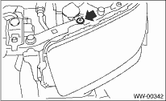
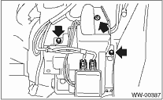

1. Open the front hood.
2. Disconnect the ground cable from the battery.
3. Remove the front bumper. 
4. Remove the clip holding washer water supply tap.

5. Remove the two bolts and one nut, hose, connector and washer motor cover, and then remove the washer tank.
